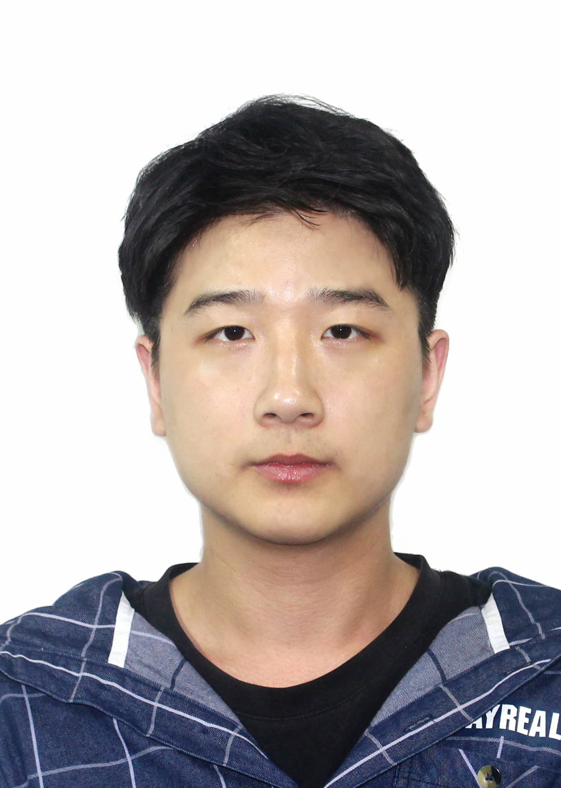

|
Huairui Wang (王怀睿)
|
 |
PhD Student,
Institute for artificial Intelligence and machine Perception,
School of Remote Sensing & Information Engineering
Room 221, No. 5 Building, Information Sciences Campus,
Wuhan University, 129 Luoyu Road, Wuhan, China
E-mail: wanghr827@whu.edu.cn
|
About me
I am currently a PhD student in School of Remote Sensing and Information Engineering at Wuhan University, China, supervised by Professor Zhenzhong Chen.
My main research interests include Learned Image/Video Compression. Also, I do some research on Video Processing, such as Video Super-Resolution.
Education
M.E., School of Remote Sensing and Information Engineering, Wuhan University, 06.2021
B.E., School of Remote Sensing and Information Engineering, Wuhan University, 06.2019
News
- [2023.06] One learned video compression paper is accepted by IEEE TMM!
- [2023.05] One learned video compression paper is selected as lecture presentation by IEEE ISCAS!
Publications
Under review
Huairui Wang, Nianxiang Fu, Zhenzhong Chen, Shan Liu. Dynamic Kernel-Based Adaptive Spatial Aggregation for Learned Image Compression. Submitted to a CCF A Conference, under review.
Huairui Wang, Zhenzhong Chen. Learned Video Compression using Temporal Information. Submitted to IEEE Transactions on Image Processing, in revision (AE decision: Review Again After Major Changes).
Journals
Huairui Wang, Zhenzhong Chen, Chang Wen Chen. Learned Video Compression via Heterogeneous Deformable Compensation Network. IEEE Transactions on Multimedia, 2023. (SCI Top, IF=8.182)
Yuantong Zhang, Huairui Wang, Han Zhu, Zhenzhong Chen: Optical Flow Reusing for High-Efficiency Space-Time Video Super Resolution. IEEE TCSVT 2022. (SCI Top, IF=5.859)
Guangjie Ren, Feiyang Liu, Huairui Wang, Daiqin Yang, Tao Wang, Sihan Wang, Yunfei Zhang: Multi-objective optimization based perceptual bit allocation for gaming video coding in VVC. Signal Processing 2022. (SCI, IF=4.729)
Conferences
Huairui Wang, Nianxiang Fu, Zhenzhong Chen. Efficient Learned Video Compression via Bidirectional Temporal Information Exploration. IEEE ISCAS 2023 (Lecture Session).
Huairui Wang*, Guangjie Ren*, Tong Ouyang*, Junxi Zhang, Wenwei Han, Zizheng Liu, Zhenzhong Chen: Perceptual in-Loop Filter for Image and Video Compression. CVPR Workshop 2022. (*: Co-first Author)
Yuantong Zhang, Huairui Wang, Zhenzhong Chen: Controllable Space-Time Video Super-Resolution via Enhanced Bidirectional Flow Warping. IEEE VCIP 2022.
Huairui Wang, Wanjie Sun, Zhenzhong Chen, Daiqin Yang: DOVE: Decomposition Oriented Video super-rEsolution. IEEE VCIP 2020 (Oral Presentation).
Projects
End-to-End Optimized Video Compression, 2021.01-Present
Heterogeneous deformable compensation network for learned video compression
Utilizing long-range temporal information for video compression
Exploring bidirectional temporal information for video compression
End-to-End Optimized Image Compression, 2023.03-Present
Dynamic kernel-based adaptive aggregation for learned image compression
Investigating masked image training for image compression
Exploring end-to-end image compression framework
Optimization of hybrid coding framework based on deep learning, 2020.01-2021.12 Research and development of vehicle-road collaborative intelligent system, 2019.04-2021.09
Multi-thread road coordination back-end system construction and maintenance
Vehicle behavior analysis algorithm based on real-time object detection algorithm
Fast background modeling algorithm and abnormal object detection algorithm for monitoring scenes
Development of traffic flow information sensing technology (real-time traffic statistics, lane-level traffic statistics, lane-level congestion detection)
Guide the development of algorithms such as traffic accident monitoring, scene weather prediction, and model classification
Proposals
Haichuan Ma, Cunhui Dong, Huairui Wang, Haotian Zhang, Zhe Zhang, Han Zhu, Ding Ding, Li Li, Xiaozhong Xu, Shan Liu, Zhenzhong Chen, Dong Liu, "Response to the Call for Proposals on Neural Network-Based Image Coding by Team DwOTeo", VC-38-M326, Online, Jun. 2022. (Adopted)
Han Zhu, Huairui Wang, Feiyang Liu, Zhenzhong Chen, "EE2 Proposal: Exploration of joint loss function", VC-34-M294, Hainan, June, 2021.
Han Zhu, Huairui Wang, Feiyang Liu, Zhenzhong Chen, VC-34-M294, "EE2 Proposal: Exploration of joint loss function", Hainan, June, 2021.
Tong Ouyang, Huairui Wang, Han Zhu, Zhenzhong Chen "AHG11: Transformer based in-loop filtering", JVET-Y0081, Jan. 2022, Teleconference.
Competitions and awards
Second-Class Outstanding Academic Scholarship of Wuhan University, 2022
Second prize in the National Mathematical Modeling Competition for Graduate Students, 2022
Outstanding Project of National University Student Scientific Research, 2018
Zhizhuo Scholarship of Wuhan University, 2017
|